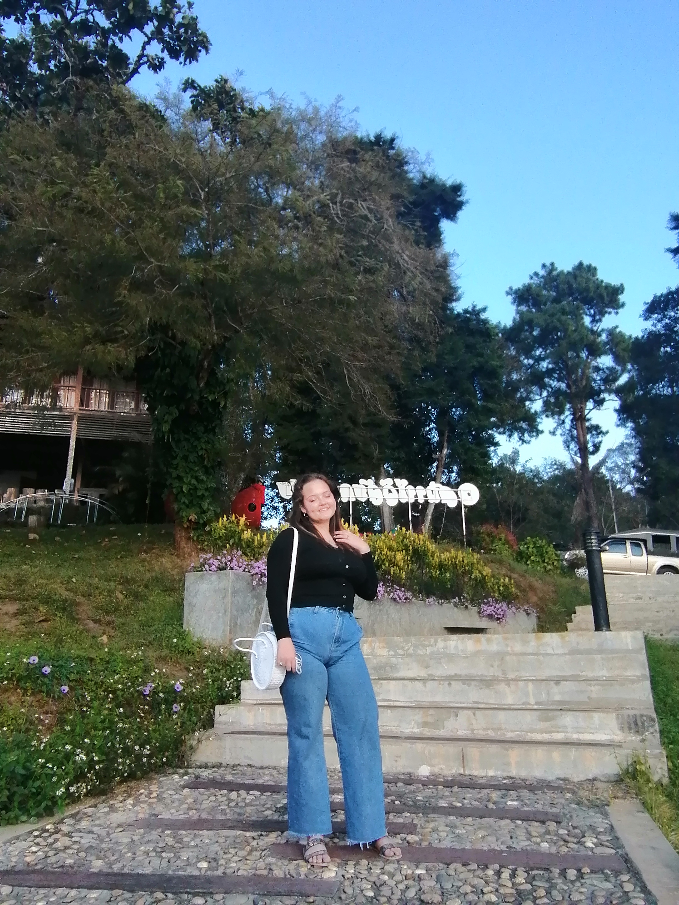
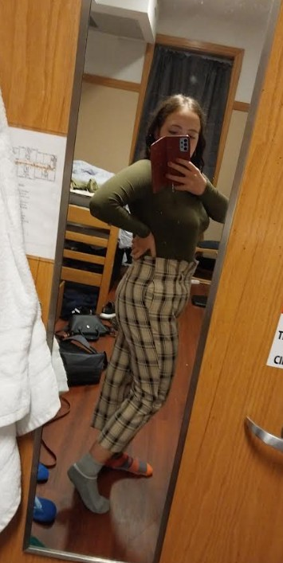

The Transformation, Logged
 AFTER · Jun 2026
AFTER · Jun 2026

BEFORE · Jan 2025Drag to compare
 MONTH 1
MONTH 1

MONTH 3 MONTH 6
MONTH 6
My Experience
When I graduated highschool in May 2022, I was obese and very inactive at 215 lbs. I couldn't even run a third of a mile before I was too winded to continue. By August 2023, I was 135 lbs, and regularly running 10-15 miles per day. I've kept all the weight off since then, and continued distance running as a hobby. My personal best is 35 miles in just under 8 hours. I also had insulin sensitivity issues, and was prediabetic. I would lose feeling in my arms and legs after eating sweets. Four years of intermittant fasting and distance running later, my body is able to produce insulin in a normal, non-diabetic way.
20:4, Built Around the Run
Fasted runs in the morning, real food between 5 and 9 pm. This is my maintenance diet. When I was in the process of losing 80 lbs, I would fast anywhere from 36-72 hours before breaking the fast. When I broke the fast, I didn't count calories or really consider the type of food I was eating though. That's why it took a year and three months for me to lose the 80 lbs. If I had counted calories and focused on whole foods during my eating windows, I probably would have lost weight faster.
Fasting and training schedules are personal — adjust timing, duration, and intake to fit your own body, goals, and any guidance from a doctor or dietitian, especially around long or hard efforts.